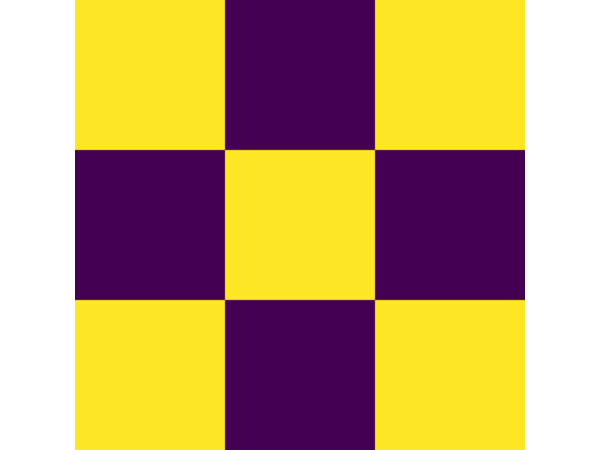

The Emergence of Order 
Ryan & James
Created: 2020-11-11 Wed 13:04
1 Introduction
- Looked at the emergence of patterns from natural and iterative processes.
- This lead to an investigation of fractals mostly
2 Definition of a Fractal
- Shapes with a complex structure
- Tend to exhibit self-similarity
- Although they may not!
2.1 Examples of Fractals
To motivate the concept, here are some fractals we generated in our investigation:
- Self-Similar Fractals
\begin{align*}
\mathbf{B} \leftarrow
\begin{bmatrix}
\mathbf{B} & \mathbf{Z} & \mathbf{B} \\
\mathbf{Z} & \mathbf{B} & \mathbf{Z} \\
\mathbf{B} & \mathbf{Z} & \mathbf{B} \\
\end{bmatrix}
\end{align*}
where:
- \(\mathbf{B}= \left[ 1 \right]\)
- \(\mathbf{Z}= \left[ 0 \right] \)
Vicsek’s Fractal

\begin{align*}
\mathbf{B} \leftarrow
\begin{bmatrix}
\mathbf{B} & \mathbf{B} & \mathbf{B} \\
\mathbf{B} & \mathbf{Z} & \mathbf{B} \\
\mathbf{B} & \mathbf{B} & \mathbf{B} \\
\end{bmatrix}
\end{align*}
Sierpinski’s Carpet
- Can also use the Chaos Game
Sierpinski’s Triangle

- Can occur from natural phenomena like iteratively folding something:
Dragon Curve
- and sometimes thay just fall out of otherwise simple math:
\[ z \leftarrow z^{2} + c \]
- What follows is an illustration of all the points that converge to zero for values on the circle:
\[ z \leftarrow z^{2} + e^{i \frac{9k}{2}} \]
Julia Sets

2.2 Mandelbrots Definition
- How do we define what a fractual really is?
2.3 Mandelbrot
- This has since been rejected and is somewhat unresolved!
- Falconer, K. J., Fractal geometry: mathematical foundations and applications (), : {Wiley}.